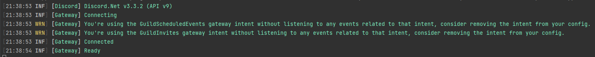

Configuring serilog
Prerequisites
- A basic working bot with a logging method as described in Creating your first bot
Installing the Serilog package
You can install the following packages through your IDE or go to the nuget link to grab the dotnet cli command.
| Name | Link |
|---|---|
Serilog.Extensions.Logging |
link |
Serilog.Sinks.Console |
link |
Configuring Serilog
Serilog will be configured at the top of your async Main method, it looks like this
using Discord;
using Serilog;
using Serilog.Events;
public class Program
{
static void Main(string[] args) => new Program().MainAsync().GetAwaiter().GetResult();
public async Task MainAsync()
{
Log.Logger = new LoggerConfiguration()
.MinimumLevel.Verbose()
.Enrich.FromLogContext()
.WriteTo.Console()
.CreateLogger();
_client = new DiscordSocketClient();
_client.Log += LogAsync;
// You can assign your bot token to a string, and pass that in to connect.
// This is, however, insecure, particularly if you plan to have your code hosted in a public repository.
var token = "token";
// Some alternative options would be to keep your token in an Environment Variable or a standalone file.
// var token = Environment.GetEnvironmentVariable("NameOfYourEnvironmentVariable");
// var token = File.ReadAllText("token.txt");
// var token = JsonConvert.DeserializeObject<AConfigurationClass>(File.ReadAllText("config.json")).Token;
await _client.LoginAsync(TokenType.Bot, token);
await _client.StartAsync();
// Block this task until the program is closed.
await Task.Delay(Timeout.Infinite);
}
}
Modifying your logging method
For Serilog to log Discord events correctly, we have to map the Discord LogSeverity to the Serilog LogEventLevel. You can modify your log method to look like this.
private static async Task LogAsync(LogMessage message)
{
var severity = message.Severity switch
{
LogSeverity.Critical => LogEventLevel.Fatal,
LogSeverity.Error => LogEventLevel.Error,
LogSeverity.Warning => LogEventLevel.Warning,
LogSeverity.Info => LogEventLevel.Information,
LogSeverity.Verbose => LogEventLevel.Verbose,
LogSeverity.Debug => LogEventLevel.Debug,
_ => LogEventLevel.Information
};
Log.Write(severity, message.Exception, "[{Source}] {Message}", message.Source, message.Message);
await Task.CompletedTask;
}
Testing
If you run your application now, you should see something similar to this 
Using your new logger in other places
Now that you have set up Serilog, you can use it everywhere in your application by simply calling
Log.Debug("Your log message, with {Variables}!", 10); // This will output "[21:51:00 DBG] Your log message, with 10!"
Note
Depending on your configured log level, the log messages may or may not show up in your console. Refer to Serilog's github page for more information about log levels.